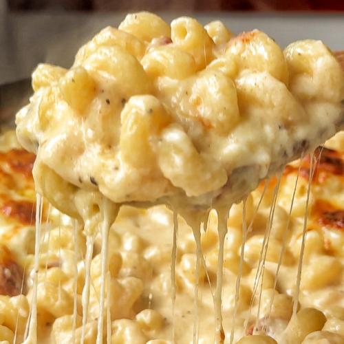

Ingredients
- 8 oz elbow macaroni
- 2 tbsp butter
- 2 tbsp flour
- 2 cups milk
- 2 cups shredded cheese (cheddar best)
- Salt + pepper
- (Optional) paprika or hot sauce
Cooking Steps
- Cook macaroni, drain.
- Melt butter in pot on medium.
- Add flour, stir 1 min (makes a paste).
- Slowly pour milk in while stirring (no lumps).
- Stir until it thickens (3–5 min).
- Turn heat low, add cheese, mix until melted.
- Add macaroni, mix, season with salt/pepper.
Picture
